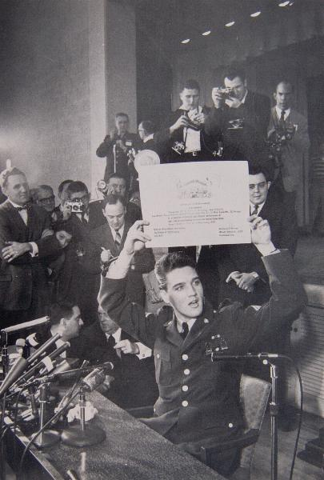

| Pictorial Press | ||
| Back 20/21 |
 | |
Elvis Presley exits from the US Army (at Frankfurt on February 14, 1960), the media attention no less intense than when he'd entered it two years previously. Presley holds aloft a "Certificate of Achievement" marking his "faithful and efficient performance of duty". |